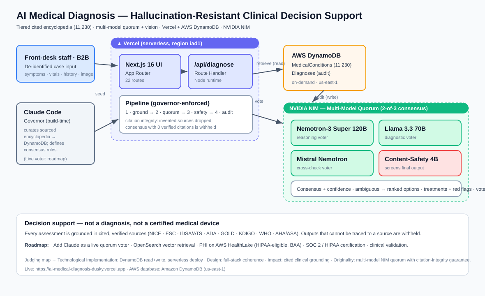

H0 · Hack the Zero Stack — Track 2 (B2B)
AI Medical Diagnosis
Hallucination-Resistant Clinical Decision Support
Technical Architecture & Stack
Vercel · Amazon DynamoDB · NVIDIA NIM
The problem
Clinicians won't trust an AI that makes things up
- LLMs hallucinate — they invent plausible-sounding conditions, drugs and citations.
- In medicine that isn't a quirk, it's a safety and liability blocker.
- So we built a generative system that can't present anything it can't cite.
Sold B2B to provider organisations — the client is the clinic, not the patient. It sits behind the front desk, relieving pressure at initial contact and letting staff query a cited encyclopedia while they assess.
Architecture
Every request: read-grounded, write-audited

Request lifecycle
What happens on one assessment
Clinician → Vercel (Next.js 16 /api/diagnose)
1. retrieve grounded candidates ← DynamoDB (read)
2. optional image → NIM vision extracts visible features
3. 3 independent NIM voters reason only over those candidates
4. weighted 2-of-3 consensus + citation-integrity filter
5. content-safety model screens the narrative
6. persist consensus + votes + citations → DynamoDB (write)
→ response: diagnosis · confidence · cited sources · treatments
No separate backend — the whole pipeline runs as Vercel serverless functions.
The engine
A multi-model quorum, not a single wrapper
Three independent voters
- NVIDIA Nemotron-3 Super 120B
- Meta Llama 3.3 70B
- Mistral Nemotron
Different model families → genuine vote independence.
How a verdict is earned
- Weighted: trust × confidence × retrieval match
- 2-of-3 agreement required
- Citation integrity: a source a model invents is dropped; zero verified citations → withheld
- Contested flag: a near-tie is surfaced, not hidden
Ambiguous? We present ranked options from real votes — never a black-box guess.
AWS database
DynamoDB on the critical path of every request
Read — grounding
MedicalConditions holds the verified encyclopedia. The quorum may only reason within retrieved candidates and only cite their sources.
Write — audit
Diagnoses stores every consensus, vote, citation & safety verdict. The live dashboard reads it back.
Operational tables: Patients (records + linked assessments via a pseudonymous ref) · Signups (trial requests).
Serverless & on-demand: connects cleanly from Vercel with no VPC / pool overhead, scales with zero capacity planning. A deploy-time snapshot keeps cold starts fast; DynamoDB stays the system of record.
Knowledge base
11,339 conditions, tiered & cited
| Tier | Count | Source |
|---|
| Curated | 109 | NICE / ESC / IDSA / ADA / GOLD / KDIGO / WHO / AHA · NICE CKS / NHS |
| Visible / dermatology | 25 | DermNet-cited, open-licensed reference images |
| Rare diseases | ~10,000 | HPO / OMIM / Orphanet |
| Common NIH topics | ~1,000 | MedlinePlus |
A commonality prior ranks everyday conditions ahead of rare ones on equal overlap. High-yield entries carry AMBOSS-style depth (pathophysiology, investigations, learning points). Every hand-authored citation URL is link-checked.
The stack
Zero-ops, serverless, model-agnostic
Frontend & API
- Next.js 16 (App Router, route handlers)
- React 19 · Tailwind v4 · TypeScript
- Deployed on Vercel (serverless functions)
Database
- Amazon DynamoDB (AWS SDK v3, on-demand, us-east-1)
AI — NVIDIA NIM (OpenAI-compatible)
- 3 quorum LLMs (Nemotron 120B, Llama 70B, Mistral)
- 1 content-safety model
- 1 vision model (visual differential)
- riva-translate-4b — EN / ES / 中文 / FR
Plain fetch client, no SDK lock-in — swap or add a model in one line.
Product surface
More than a model call
- Visual differential — a vision model extracts visible features from an image (assistive, not a diagnostic read) → look-alike conditions with reference images.
- Embeddable, multilingual pre-triage widget — clinics drop it on their own site; safe disposition in 4 languages via riva-translate (the NY client base is multilingual).
- Staff encyclopedia lookup · patient records · live audit dashboard · PubMed evidence library.
Reliability & integrity
Engineered to fail safe
- Transient-error retry on NIM calls — one upstream blip no longer abstains a voter.
- Honest degradation — if the models can't return usable votes, we say so; we never dress up retrieval scores as a verdict.
- Citation integrity — invented sources dropped; ungroundable output withheld.
- Decision support, not a diagnosis — de-identified inputs by design; pre-certification compliance posture.
Roadmap
Built to extend onto AWS healthcare
| Patient engagement | Amazon Connect + EHR → widget into a contact flow |
| Identity | Connect Voice ID / Cognito → verify before linking a record |
| Scheduling | Connect + Lambda → real calendar slots |
| Ambient docs | AWS HealthScribe → visit notes seeded by the cited assessment |
| Coding | Comprehend Medical → ICD-10 / CPT (encyclopedia already ICD-10-indexed) |
| Insights | HealthLake + QuickSight → population dashboards from the audit trail |
Plus: Claude as a live quorum voter · OpenSearch vector retrieval · PHI on HealthLake under a BAA · SOC 2 / HIPAA.
Grounded. Auditable. Honest.
A quorum of independent models that must agree — grounded in cited sources on AWS DynamoDB, deployed on Vercel.
ai-medical-diagnosis-dusky.vercel.app
Built on Vercel · Amazon DynamoDB · NVIDIA NIM